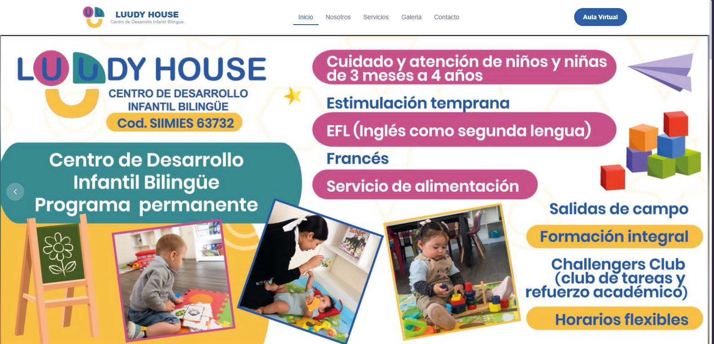
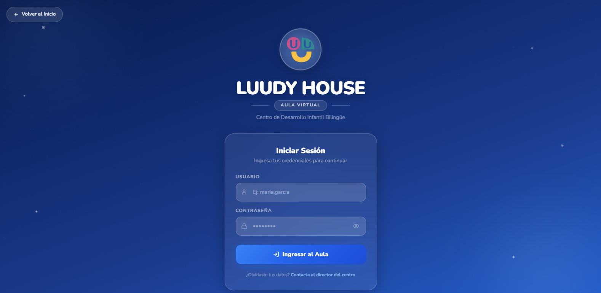
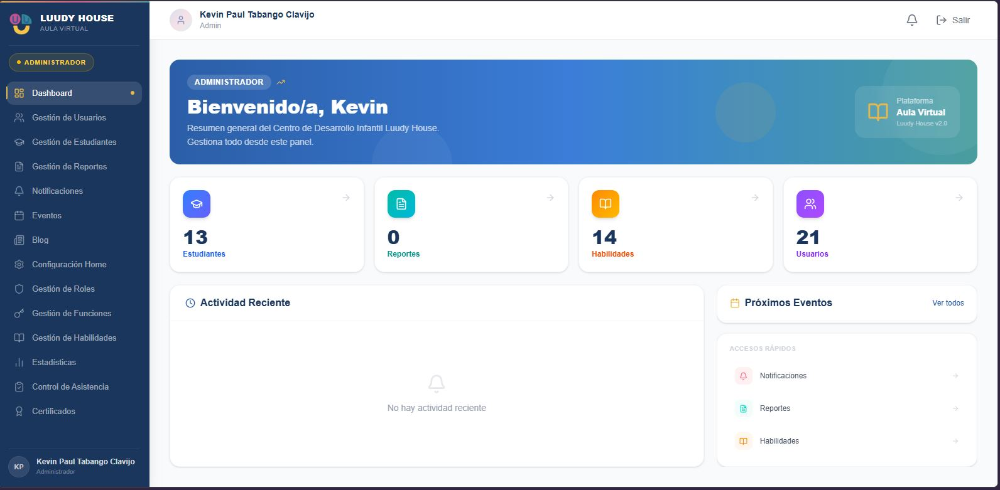

Sistema Web para la gestion del Centro Infantil

Problema
El proceso de gestión de información se realizaba de manera manual y utilizando diferentes herramientas. Los registros de actividades se almacenaban en documentos de Word, los reportes se generaban individualmente en formato PDF.Esta forma de trabajo dificultaba mantener la información organizada y centralizada. Además, implicaba invertir tiempo en registrar la misma información en diferentes medios, buscar documentos y fotografías, preparar reportes y compartir las evidencias de forma individual.
Solución
Desarrollé un sistema web para centralizar en una única plataforma la gestión de registros, actividades, evidencias fotográficas y reportes. La aplicación permite registrar y consultar la información desde un mismo lugar, asociar evidencias fotográficas a las actividades correspondientes y generar reportes a partir de los datos almacenados. De esta manera, se digitaliza el flujo de trabajo y se reduce la dependencia de documentos y herramientas utilizadas de forma independiente. El sistema fue desarrollado con React y Next.js, utilizando MySQL para la gestión de datos, Brevo para el envío de correos y Railway para el despliegue de los servicios.
Funcionalidades principales
- Gestión de usuarios
- Registro y actualización de inventario.
- Gestion de Roles
- Modulo de Estadisticas
- Blog
- Consulta de información.
- Autenticación de usuarios.
- Autorización mediante roles.
- Validación de datos.
Tecnologías utilizadas
Capturas del proyecto

Pagina de Inicio de sesion para acceder a la Aula virtual dependiendo el rol: Administrativo, Docente, Padre de Familia

Panel Administrativo para acceder a distintos modulos , como gestion de usuario, reportes etc..
Resultado
El desarrollo del sistema permitió centralizar en una única plataforma la información relacionada con registros, actividades, evidencias fotográficas y reportes. Se redujo la dependencia de documentos y herramientas utilizadas de forma independiente, facilitando el acceso, organización y seguimiento de la información. Además, la digitalización del proceso permitió simplificar tareas que anteriormente se realizaban de manera manual y mejorar la disponibilidad de los registros históricos.
La arquitectura utilizada permite que el sistema pueda mantenerse y ampliarse posteriormente con nuevos módulos y funcionalidades.